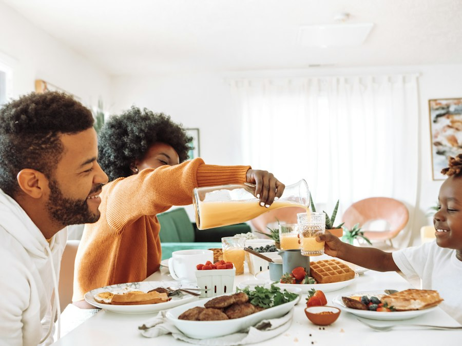
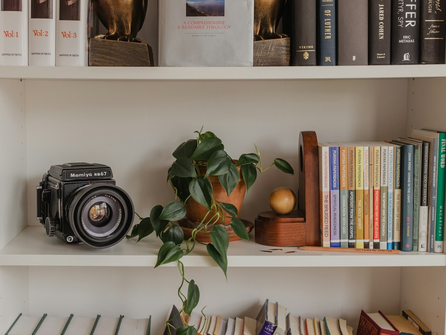
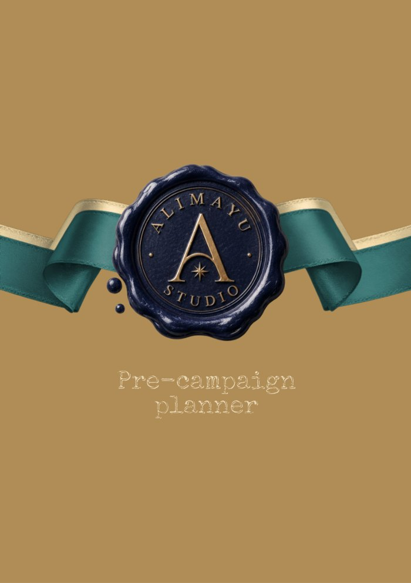

Public interest futurist
Dr. Allison
Alimayu
The futures of children and families are decided in budgets, boardrooms, and evidence reviews. She has a seat in all three, and she works to make those decisions serve the public.
Formerly Allison Stephens


- Research
- Policy
- Education
- Technology
- Faith
- Impact
Interviewed and quoted by
TEDx Carlow College, Ireland
What is missing from science? The rest of us.
Who gets a seat when the evidence is weighed, and what changes when more people are in the room.
The record, 2006 to now
Every seat at every table
Choose any line in the ledger
Each line is a role. Hover or tap to read it.
Inside the studio
More than the work for hire
Initiatives, a masterclass, and a publication, each with its own name, its own look, and its own home.
The Postmoon Club
A community for the mother through the twelve months after birth.
Visit the club →
ABIDE with FAAITH
Clergy visit families at home to promote safe, stable, and nurturing relationships.
See the model →
Curation
Reading lists, film notes, and the bookshop All My Friends Are Writing Books.
Opening soon
Ballot ready
Running for office starts the year before. A free masterclass and a companion planner.
See the masterclass → EditorialStudio Notes
An annual motion issue, a quarterly newsletter, and selected publications.
Read Editorial →
“The highest rated keynote in conference history.”
“Your session was the highest rated at our conference this year.” Association of College and University Auditors
“We had an intern do research and updated our customer service scripts based on your keynote.” Arkansas Blue Cross Blue Shield
From the studio
Four ways to work together
 Photo: Ellen Schmidt
Photo: Ellen SchmidtLas Vegas Review-Journal
Speaking
200+ engagements, from TEDx to live national television.
See talks and the reelConsulting
Strategy sessions, futures sessions, and monthly advisory.
Book a session Photo: Jeff Scheid
Photo: Jeff ScheidLas Vegas Review-Journal
Board service
Audit, finance, and regulatory oversight. Bio and deck open instantly.
See the recordLegal expert
Consulting and expert witness testimony on managed care, health data, and public health.
See areas of expertiseStudio Notes by email each quarter, new talks and masterclasses on YouTube, and the work as it happens on LinkedIn.